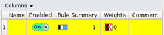
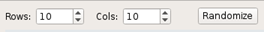

To access: From a Calibre WORKbench menu bar, Litho > Calibre LSG Layout Generation, or from a Calibre WORKbench Tcl shell call—see “Invoking Calibre LSG from a Tcl Shell Call”.
Click the Test tab.
Use this tab to optionally test your Calibre LSG set up before executing a run.
Object |
Description |
|---|---|
A |
Rule Table pane — Select and display rule column information.  |
B |
LSG Test pane — Enter row and column count and click Randomize to run an LSG setup test.  |
C |
Test pattern grid pane — Create rules and composite patterns interactively by selecting cells in the test pattern grid. Definitions (left to right):
|
D |
Legend pane — Show mask layer legend colors. |
E |
Used Cell Count pane — Show the number of each unit cell definition used in the pattern. |
F |
Rule reference pane — Display target and neighbor cell information for the selected rule in the Rule Table. |
G |
Selected Cell pane — Show unit cell type, applied rules, and target cell probability information for the selected cell in the test pattern grid. |
H |
Legend: pane — Display priority (weight) information and probability information for each unit cell and its rotation and rules in the test pattern. Definitions (left to right):
|
For a description of the file formats and argument options used for imported files see “calibre -lsg” and “Calibre LSG File Formats”.